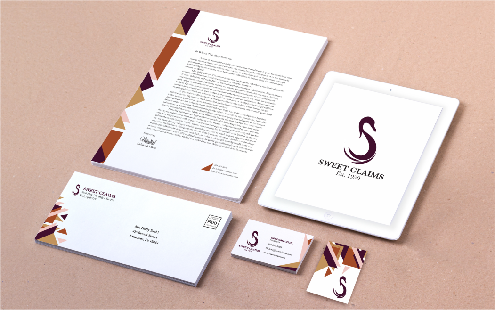

Sweet Claims Rebrand
Rebranding to Convey a Heritage of Professionalism
Discovering to Build a Visual Language
With over 60 years of successful business, the legacy of Sweet Claim’s high standards and professionalism in adjustment expertise and administrative systems sets them apart from their competitors. They value excellence and keen attention to detail to provide their clients with information that they can trust. With such a rich heritage of high-quality attention, Sweet Claims outdated branding needed to reflect the same quality.
To begin this project, I dove into the company's history, drivers, and competition. The discovery document outlines the goals for the rebrand based on discussions with the client and competition research. Through the discovery phase, client personas were constructed to represent Sweet Claim’s clients.
Stylescaping For Client Personas
After the client and I reviewed her discovery document, I went to work on creating two stylescapes with unique type, colorschemes, and visual languages to help focus the direction for the company’s branding.
Sleek Legacy
- Legacy
- New York Professionalism
- High Quality
Contemporary Professionalism
- Customer Care
- Attention to Detail
- Tailored Service
Talioring the Logo
Reviewing the stylescapes helped the client to land on the contemporary professionalism board to reference for the brand's new visual style. The idea of referencing a coastal shape came out of conversations with the client. From this point two logos were created to reference the elegance of Sweet Claims. The topmost logo was a nod to a nautical rope/ innard curves of conch shells. It conveyed trust and quality of service found at Sweet Claims. Swans were the focus of the alternative logo. Since swans symbolize partnership, elegance,and devotion, they fit well within Sweet Claim’s brand values and became the motif of the bottom logo.
Finalizing Branded Stationery
The swan suited Sweet Claim’s values and vision the most, and so branded stationery was designed around the new logo. To match some of the stylescape’s art deco architecture, the imagery played with some similar angles.
Contact
I am always up for a good cup of coffee (virtually or not)! I’d love to hear from you!
Email Me